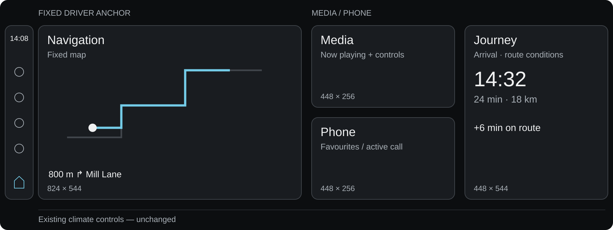
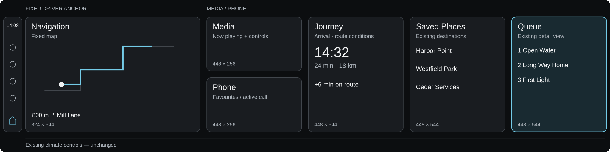
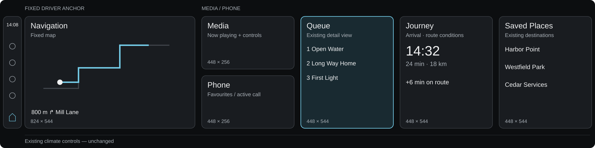
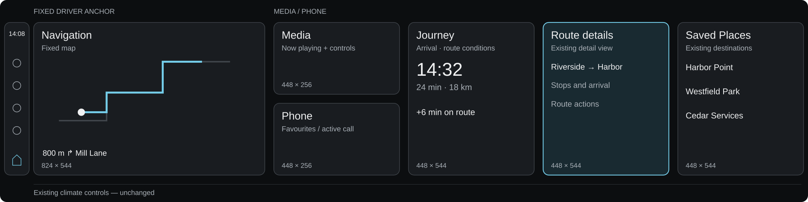
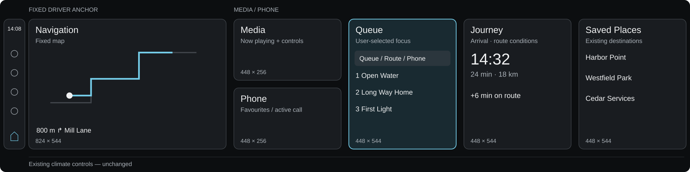

Five ways to use the wider screen
Same map and widget sizes. Same functions at both widths. Sketches compare composition, not finished visual design.
2880 × 720 native canvasExisting detail viewPrimary controls remain anchored
Shared 1920 baseline
Media and Phone stay visible. Journey shares its slot with Saved Places or an opened detail.

At equal presentation scale this occupies two-thirds of a wide screen. Map 824×544 · compact cards 448×256 · tall cards 448×544.
01 · Adjacent context
Recommended test. Detail sits between Media/Phone and Journey; the driver anchor stays fixed.

Home assumption: Queue remains open by default. Its everyday usefulness still needs evaluation.
02 · Stable extension
The current wide arrangement. Summary positions stay stable; Queue is far from Media.

No additional functions or in-motion permissions on the wide screen.
03 · Nearest slot
Context follows its source. Switch Media / Route to see Journey and its neighbour trade positions.

Media selected: detail → Journey → Saved Places.
04 · Content continuation
Journey + route details form an explicit pair. This is a content strategy, not an independent grid system.

Do not duplicate ETA and distance in both cards. Details should add stops and route actions.
05 · User-selected focus
A fixed detail column with explicit Queue / Route / Phone choices. Predictable, but adds another selector.

Same selectable detail views must also be available at 1920.